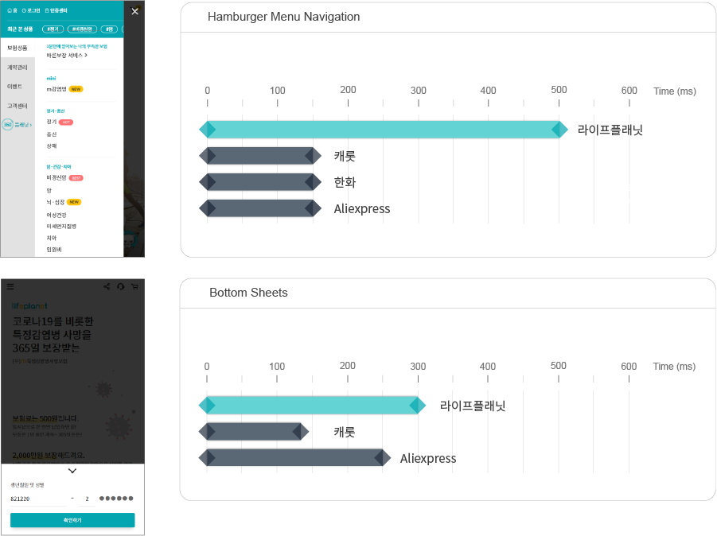
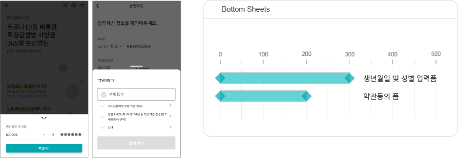
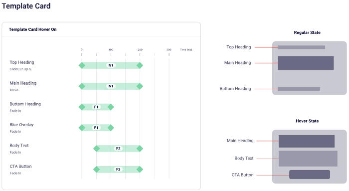

Mobile Web 개선
1. 현재 문제점
- 1) 전반적으로 인터랙션 속도(duration)가 타사이트 대비 느려서 일부 사용자에게 답답한 느낌을 줄 수 있다. 
- 2) 동일한 기능의 컴퍼넌트 인터랙션 속도가 상이하여, 일관된 브랜드 이미지를 제공하지 못하고 있다. 
2. 문제를 해결하기 위한 가설
- 1) 인터랙션 속도(duration)를 개선하여 사용자 액션에 대한 빠른 피드백을 주면, 긍정적인 서비스 경험을 제공할 수 있을 것이다.
- 2) 인터랙션 가이드를 기준으로 개발을 하면, 일관성 있는 서비스를 사용자에게 제공할 수 있을 것이다.
3. 개선 방향
- 1) 전반적인 인터랙션 속도를 빠르게 개선한다.
- 2) 현재 사이트에 대한 모션개발 코드를 분석하고, 가이드를 만든다. 